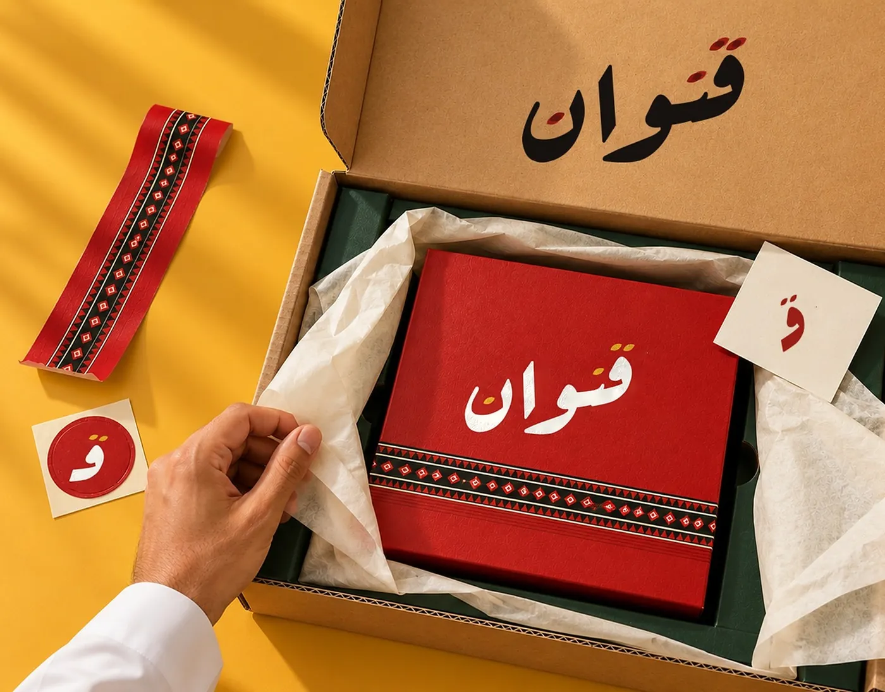

Qinwanقنوان

Self-initiated
Brand identity and a 31-page company profile for a family house of dates and coffee.
Qinwan is a fictional house of dates, coffee and gifting, presented the way a family business in the Gulf would present itself: as a company profile.
The profile walks from the family letter and the collection to corporate gifting, hospitality, the seasons, the boutique and the app, and closes with the construction of the Arabic wordmark and brandmark. The identity is red, ink and paper, with a woven Sadu band and a seal you can stamp on a box.